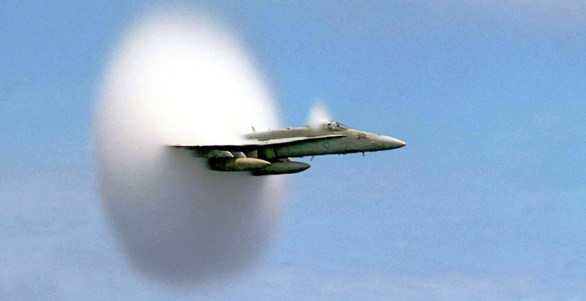

– samolot bojowy przeznaczony przede wszystkim do zwalczania innych statków powietrznych i uzyskania przewagi powietrznej, jak i obrony własnych samolotów o innym przeznaczeniu, czym różni się od bombowców, służących do atakowania celów naziemnych, głównie przy użyciu bomb.
Myśliwce z założenia są szybkie i silnie uzbrojone. Większość to maszyny względnie małe (przeważnie jednomiejscowe) i zwrotne…
Bardziej szczegółowo…
Zdjęcie poglądowe na którym przedstawione są osiągi najnowszego i najbardziej zaawansowanego technicznie myśliwca na świecie - Lockheed Martin F-35 Lightning II
Statystyki jak statystki - nuda
Bardziej po Polsku:
Prędkość maksymalna: Kilkukrotnie ponaddżwiękowa
MOC: około 10x Bugatti Chiron
Sonic Boom - czyli efekt Dopplera

Efekt Dopplera został opisany przez austriackiego matematyka Christiana Dopplera w 1842 r. Zjawisko to zachodzi, gdy źródło lub obserwator znajduje się w ruchu i generuje z siebie dźwięk.
Najłatwiej wyobrazić sobie to na przykładzie karetki na sygnale, która zbliża się do nas - mija - a następnie się oddala
Ekhm... fale dżwiękowe które wytwarza nasza karetka z każdym "elo" docierają do nas po kolei. Jednak co się stanie gdy fale wcześniejsze zaczną być doganiane przez późniejsze?
Stanie się mniej więcej to (Uwaga na uszy!)
Zmiany ciśnienia akustycznego niosą za sobą nie tylko ciekawe efekty dźwiękowe, ale i wizualne. Powstająca fala uderzeniowa zakrzywia światło, powodując, że zjawisko to staje się widoczne gołym okiem. Doświadczenie to jest podobne do obserwowania rozgrzanego asfaltu w gorący dzień. Unoszące się powietrze powoduje zakrzywienie wiązki światła, co jest przez nas odbierane jako falowanie powietrza. Poza tym, przez gwałtowne obniżenie ciśnienia w minimach fali akustycznej, powietrze się istotnie ochładza. Dzięki temu, w odpowiednich warunkach atmosferycznych, wilgoć zawarta w powietrzu gromadzi się w określonych miejscach, powodując widoczną chmurę. Chmura (w idealnych warunkach) układa się w stożek, którego kształt wynika z prędkości ruchu obiektu.
Urywki z tych filmów będą przewijały się w każdej zakładce
Top Gun
Maverick (Tom Cruise) i Goose (Anthony Edwards) to dwaj piloci marynarki udowadniający z każdym lotem swoje ogromne możliwości. Wybrani do szkoły asów przestworzy - Top Gun są szkoleni na najlepszych pilotów na świecie. Wkrtóce Maverick zakochuje się w swojej instruktorce Charlie (Kelly McGillis).
Sky Fighters
W trakcie dorocznych pokazów Farnborough Air Show znika z radarów Mirage 2000. Zadanie odnalezienia myśliwca przypada dwóm młodym, acz doświadczonym pilotom - Marchelliemu i Valois. Gdy ich misja ma już się zakończyć powodzeniem, zostają nagle zaatakowani. Marchelli, wbrew rozkazom swoich zwierzchników, musi zestrzelić poszukiwaną jednostkę. To dopiero pierwszy element skomplikowanej intrygi, w której stawką będzie udaremnienie groźnego ataku terrorystycznego i uratowanie honoru francuskiej marynarki wojennej.